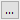

軸に直線や参照線などのオブジェクトを追加するには、いつでも軸ダイアログを開いて操作できます。このページでは、これらの軸関連オブジェクトを直感的かつ素早く追加する方法をご紹介します。
挿入: 直線を追加...を選択して直線を追加: addLineダイアログを開きます。
X軸またはY軸の指定した位置にラベル付きの垂直または水平の直線を挿入できます。
線フォーマットブランチを開いて線のスタイルをカスタマイズし、表示フォーマットとラベルの位置を決定します。
選択可能および移動可能にチェックを付けると、線を軸の他の場所にドラッグアンドドロップできます。移動した場合ラベルは自動的に更新されます。
挿入参照線...を選択して参照線を挿入ダイアログを開きます。
このダイアログは、軸をクリックして参照線を追加ボタンをクリックして開くこともできます。
基準線を追加する軸を選択できます。
位置X=または位置Y=にスペース区切りで複数の値を入力でき、複数の参照線を追加できます。
ボタン 
詳細...ボタンをクリックすると、参照線ダイアログが開き、追加した参照線をさらにカスタマイズできます。
Note: 参照線を追加後クリックして開くミニツールバーボタン使用して、さらにカスタマイズすることもできます。